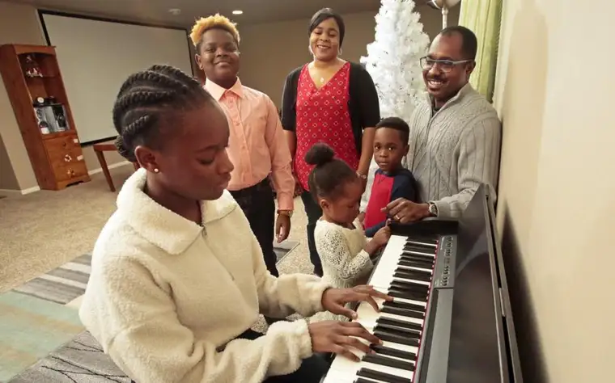
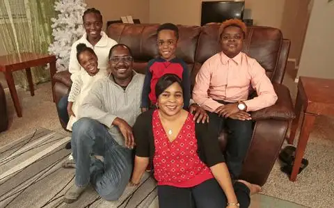

FARGO — When Charles and Rosa Mukhtar left Sudan with their young son Aronah for America 14 years ago, they likely felt a bit like Joseph, Mary and baby Jesus fleeing Bethlehem more than 2,000 years earlier to escape oppression and possible death.
Certainly, like the couple from Nazareth, they clung to God in uncertainty.
“Leaving the country was one of our most sweet and bitter decisions that we made,” Charles says. “We loved our country, the people and our relatives, but the civil unrest gave us no choice. We left in pursuit of a better and safer life for our children.”
The journey, which covered many more miles even than the Magi of Jesus’ time, eventually led them to the strange and distant land of North Dakota. To adapt to their new home, Charles relied on his father’s frequent advice, that “wherever you go, you need to observe the culture, blend in, take the good things and leave the bad ones out. And that’s what we have been doing.”
Charles, who works as a technology security analyst and, according to his blog, is a “self-taught goal crusher,” says many have commented how he even sounds American. And Aronah, now 20, a student at Concordia College and accomplished athlete, appears every bit as integrated here as his native-born peers.
Christmas traditions
Charles recalls how in his home village, in the province of Yei in South Sudan, people would travel miles to congregate at a central, larger church up to two weeks before Christmas.

“We always saw it as a time of giving to others,” he says, adding that they’d offer whatever they had. “We would pray and sing hymns to get ready for the coming of Christ, bringing nets, food and lamps, and people would cook and eat there for an entire week.”
The elderly often would stay behind, along with some of the children to assist them.
“Those who travel, it’s either walking, or if you’re lucky, you ride a bike, or if there’s anybody who has a car you all jump on and go,” Charles says.
People could leave for the duration because of the rural lifestyle. “In the village, there are no (regular) jobs; you are a farmer.”
While gathered, they also would visit the sick in hospitals, bring food to the street children and settle disputes with one another.
“If you have a grudge with someone, you would go and reconcile, to be ready to receive Christ,” he says.
“Christmas is something big, something holy,” Charles adds. “Christ is going to be born, so you have to be ready to receive him.”
The emphasis was much more spiritual — and certainly more communal — than the American version.
“We’re all connected with each other; that’s one of the things I don’t see here.”
Rosa, “a city girl,” as Charles calls her, spent much of her life in north Sudan after her family moved there for work, living near the cathedral in the capital city of Khartoum. The two recall the vibrant choir competitions between the various churches that would take place at the cathedral at Christmastime, with songs newly composed and judged.
“One tribe would take it to another level, marching through the city singing Christmas songs,” Charles says. “Somebody’s holding the cross, everyone is following, singing, holding drums and marching through the entire city. And anyone could join in.”
Keeping Christmas, and all days, focused on the right thing was Rosa’s mother, who would rise early each morning to pray and sing praises to God.
“When I’d wake up, I’d ask, ‘Mommy, why are you making that noise?’” Rosa says, giggling. “She’d say, ‘Someday you will have a family, and you will remember to always put God in your heart, no matter what you’re going through.’”
Whenever Rosa and her siblings complained about not having enough materially, her mother would remind them of their spiritual riches.
“Don’t be mad and say, ‘God didn’t give me food,’” she says, remembering her words. “All the time, give thanks to God.”
Aronah was not quite 6 when his family arrived here — two sisters and two brothers have been added since — but his early memories and parents’ stories have prompted reflection on the two cultures.
“They’re similar in some ways and completely different in others,” he says, noting that if one person gives you $100 and another $10, but the one giving the lesser amount “could barely scrape up that $10,” the second would be the more generous giver.
“Everything is more sincere, genuine and meaningful (in Sudan),” he says. “Here in the U.S., when Christmas comes around, people are not necessarily thinking about church or getting together with people. It’s more like, ‘Christmas is here! Presents! Mom, Dad, I want this, this and this!’”
Aronah says he’s found being with family is the best gift.
“My parents have always said ‘family first, no matter what.’ Sometimes that would frustrate me, but as I grow older, I realize why.”
And rather than being about the best Amazon deal, Christmas gift-giving for the Mukhtars now, as in Sudan, remains simple, often involving bestowing new clothes for Christmas Mass.
“In our culture, you keep the best clothes for the church, not for the party,” Charles says.
He loves reminiscing about how his faith first took root, around age 12, when he and his friends from the private school he attended would help count the Communion hosts to be divided between the parishes. They’d also dust the pews of the church near the school, where Muslims and Christians would recite The Our Father Prayer together every morning.
“I’ve always loved to serve, and… counting this bread made us feel holy,” he says, smiling, just as consuming it does now. “For our family, the midnight Mass is the most important part of Christmas. By consuming the body and blood of Christ, we unite with him in body and soul.”
This year, like every year since arriving, the Mukhtars will again gather at Sts. Anne and Joachim Church on Christmas Eve in their finest clothes, filled with expectation as they await, with gratitude, the savior.

“It’s all about Jesus, and what are we doing spiritually to receive him as a gift?” Charles asks. “His birthday is a bigger gift than any smaller gift we get from people. He’s going to give his body as a gift. How are we going to receive it?”
[For the sake of having a repository for my newspaper columns and articles, I reprint them here, with permission, a week after their run date. The preceding ran in The Forum newspaper on Dec. 22, 2018.]